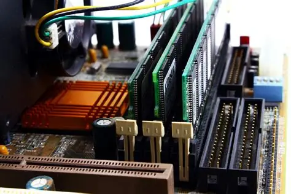
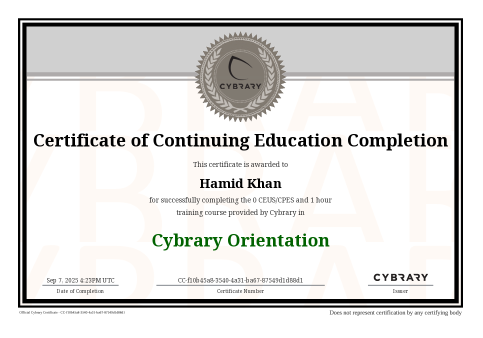
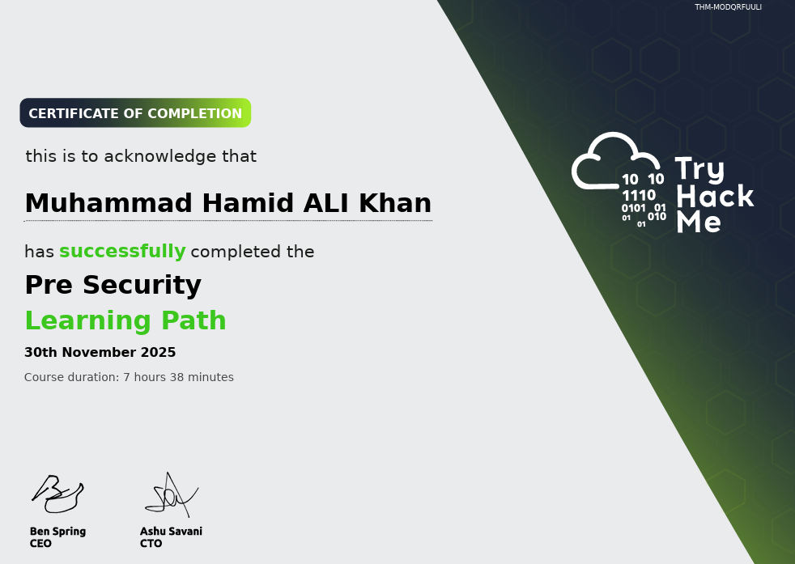
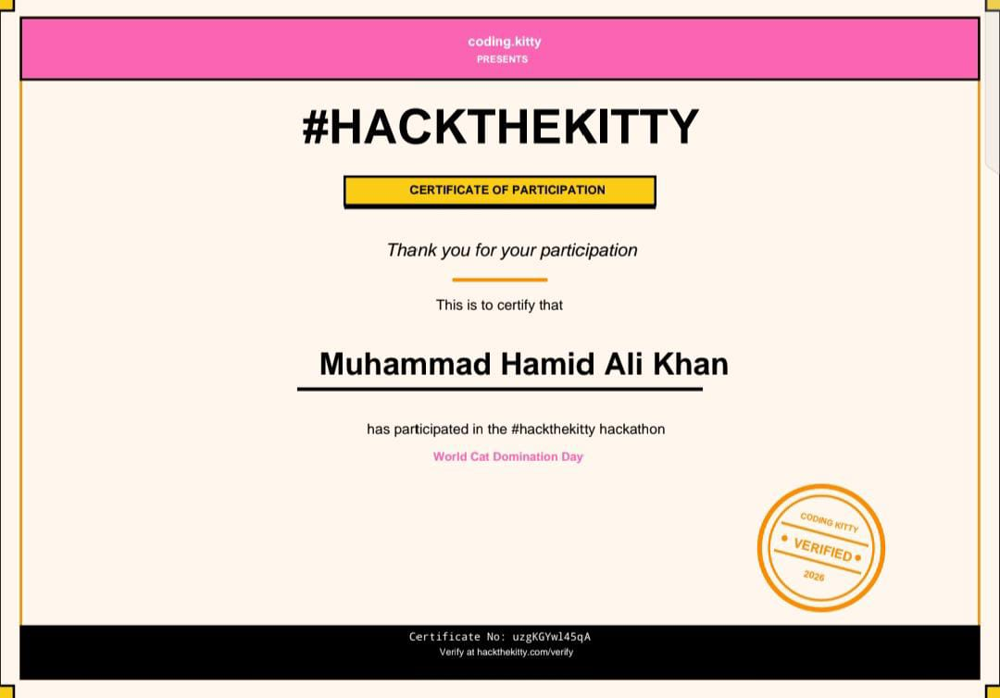

Python
Scripting · Automation · Fundamentals
STUDENT / DEVELOPER / CYBER LEARNER
I’m Hamid, a student exploring software development, Linux and cybersecurity. I enjoy learning how things work and turning ideas into useful projects.
LEARN · BUILD · EXPLORE
PK / 2026
01 / ABOUT
Curious by nature.
Developer by practice.
I’m a student from Pakistan with a growing interest in programming, operating systems and cybersecurity. I like experimenting, solving problems and learning through hands-on projects.
My current focus is strengthening my foundations and building practical skills one project at a time.
02 / TOOLKIT
Technologies, skills, and fields I’m exploring to expand my knowledge and build meaningful things.
Scripting · Automation · Fundamentals
Styling · Layout · Responsiveness
Programming fundamentals
Problem solving · OOP
Web interactivity · DOM
Semantic web structure
Scripting · Configuration
Understanding human behavior and cognition
Investigating and analyzing cybersecurity threats and vulnerabilities
Building responsive and interactive static web applications
03 / ENVIRONMENT
Linux environments I explore for learning, development and everyday workflows.
Security learning environment
Customization and system learning
Privacy and security-focused Linux
Linux desktop and development
04 / SELECTED WORK
A place to showcase your real projects. Replace the sample descriptions and links with your own details.
A Discord bot project focused on organizing useful OSINT-related commands and workflows.
VIEW PROJECT ↗A Neovim configuration project focused on a lightweight and customized coding environment.
VIEW PROJECT ↗Add your websites, frontend experiments, tools or other projects here.
VIEW PROJECT ↗Learning chess strategies, opening principles, tactical patterns, and improving my decision-making through logical thinking.
Exploring computer hardware, understanding different components, their functions, and how they work together to build a computer system.

Studying legal principles, case law, and the application of laws in various contexts.
Exploring philosophical concepts, critical thinking, and the application of philosophical principles to real-world situations.
05 / LEARNING RECORD
Certifications, achievements, and milestones that reflect my learning journey and growth.



06 / CONTACT
For projects, collaboration or a friendly conversation about technology.
Email me ↗